Jump to: Part One (building) · Part Two (lake) · Manual vs. automatic · Appendix
Have you ever wondered how our phones make panoramas? I certainly haven't before this assignment! I did a lot of trusting the process, and everything seemed to work out! But in case you have, this is the read for you! I started by touching some grass and shooting several sets of images. The images feature some sightseeing on UW campus and Waterloo Park. We'll use the UW campus building set, displayed here, for Part One and the Waterloo Park set (the "lake") for Part Two, and I use both sets in the comparison at the end. The camera center was kept approximately fixed while rotating between shots, producing projective transformations suitable for the rest of the assignment.
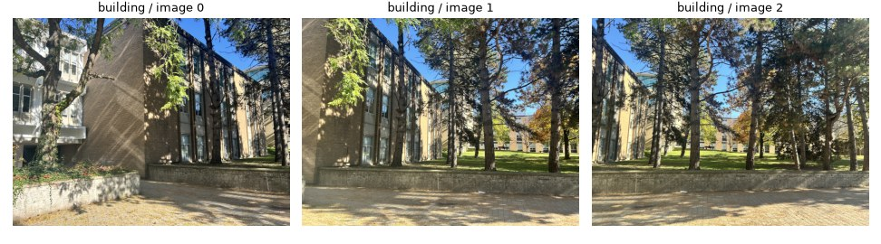
A homography is a transformation that maps points (x,y) in one image to points (x',y') in another image that correspond to the same feature. This essentially becomes a linear algebra problem, where we want to solve P' = H * P, where P and P' are the homogeneous coordinates of the points in the two images, and H is the homography matrix. The homography matrix has 8 degrees of freedom, so we need at least 4 pairs of corresponding points to solve for it. In two images of the same scene, we can usually identify far more than four matching features, so we can use least squares to solve for the homography matrix. The more points we have, the better our estimate of the homography will be.
In this first part, the points are selected manually by clicking on matching features in both images; in Part 2, we'll find them automatically using feature detection algorithms. Once we have the corresponding points, we can use them to compute the homography matrix.
Before solving for the homography, Hartley normalization is applied to the point coordinates. This is when the coordinates are translated so their centroid is at the origin and scaled so that the mean distance from the origin is sqrt(2). This improves numerical conditioning of the least-squares problem and leads to more stable homography estimates.
computeH(im1_pts, im2_pts) builds the linear system below from the clicked correspondences and solves it by least squares.
A point (x,y) in image 1 maps to (x',y') in image 2 with
x' = (a x + b y + c) / (g x + h y + 1)
y' = (d x + e y + f) / (g x + h y + 1)
=> [ x y 1 0 0 0 -x x' -y x' ] h = x'
[ 0 0 0 x y 1 -x y' -y y' ] h = y' h = [a b c d e f g h]^T
Each correspondence adds two rows to A (n points: A is 2n x 8). The code for build_system and computeH is in Appendix A.
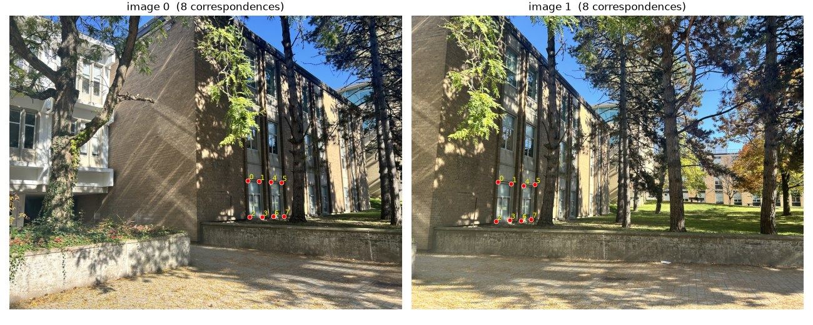
H = [[ 5.69424 0.32215 -3698.39606] [ 1.36470 6.51179 -2429.53489] [ 0.00208 0.00262 1.00000]]
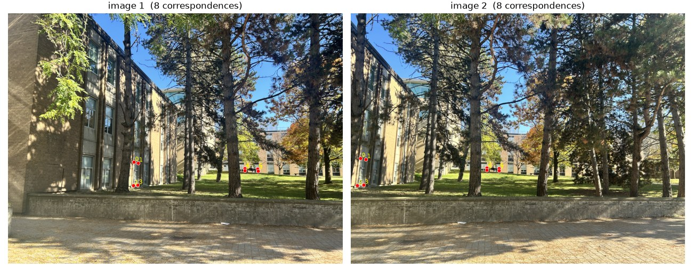
H = [[ 1.80183 -0.12155 -819.35712] [ 0.40230 1.47668 -353.06232] [ 0.00058 -0.00004 1.00000]]
==== pair 0 -> 1 (8 correspondences, 16 equations, 8 unknowns) ====
im1_pts (x, y):
[[850.4 589.0]
[890.0 591.7]
[856.7 719.2]
[900.7 719.2]
[933.1 593.4]
[969.0 595.2]
[940.3 717.4]
[978.0 715.6]]
im2_pts (x, y):
[[309.1 594.5]
[355.8 599.9]
[301.9 734.6]
[350.4 730.1]
[400.7 606.2]
[440.2 602.6]
[390.8 731.0]
[427.7 726.6]]
linear system A h = b, h = [a b c d e f g h]^T (raw pixel coordinates):
A =
[[ 850.4 589.0 1.0 0.0 0.0 0.0 -262858.6 -182059.9]
[ 0.0 0.0 0.0 850.4 589.0 1.0 -505562.8 -350160.5]
[ 890.0 591.7 1.0 0.0 0.0 0.0 -316662.0 -210526.9]
[ 0.0 0.0 0.0 890.0 591.7 1.0 -533911.0 -354960.8]
[ 856.7 719.2 1.0 0.0 0.0 0.0 -258637.7 -217126.5]
[ 0.0 0.0 0.0 856.7 719.2 1.0 -629331.8 -528324.3]
[ 900.7 719.2 1.0 0.0 0.0 0.0 -315605.3 -252007.7]
[ 0.0 0.0 0.0 900.7 719.2 1.0 -657601.1 -525087.9]
[ 933.1 593.4 1.0 0.0 0.0 0.0 -373893.2 -237775.4]
[ 0.0 0.0 0.0 933.1 593.4 1.0 -565645.2 -359719.1]
[ 969.0 595.2 1.0 0.0 0.0 0.0 -426553.8 -262007.0]
[ 0.0 0.0 0.0 969.0 595.2 1.0 -583919.4 -358667.5]
[ 940.3 717.4 1.0 0.0 0.0 0.0 -367469.2 -280359.9]
[ 0.0 0.0 0.0 940.3 717.4 1.0 -687359.3 -524419.4]
[ 978.0 715.6 1.0 0.0 0.0 0.0 -418290.6 -306062.1]
[ 0.0 0.0 0.0 978.0 715.6 1.0 -710614.8 -519955.0]]
b = [309.1 594.5 355.8 599.9 301.9 734.6 350.4 730.1 400.7 606.2 440.2 602.6 390.8 731.0 427.7 726.6]
recovered H (p2 ~ H p1):
[[ 5.694241 0.322148 -3698.396063]
[ 1.364704 6.511791 -2429.534893]
[ 0.002079 0.002618 1.000000]]
reprojection error: mean 1.82 px, max 3.76 px
==== pair 1 -> 2 (8 correspondences, 16 equations, 8 unknowns) ====
im1_pts (x, y):
[[ 526.2 623.5]
[ 542.9 626.6]
[ 523.1 721.6]
[ 542.4 719.0]
[ 989.5 648.9]
[ 989.8 657.8]
[1044.3 651.4]
[1045.1 660.9]]
im2_pts (x, y):
[[ 41.3 607.3]
[ 63.9 611.2]
[ 28.2 721.4]
[ 54.2 719.1]
[570.4 646.2]
[569.9 656.1]
[620.3 649.1]
[621.2 658.9]]
linear system A h = b, h = [a b c d e f g h]^T (raw pixel coordinates):
A =
[[ 526.2 623.5 1.0 0.0 0.0 0.0 -21732.1 -25750.5]
[ 0.0 0.0 0.0 526.2 623.5 1.0 -319561.3 -378651.5]
[ 542.9 626.6 1.0 0.0 0.0 0.0 -34691.3 -40039.7]
[ 0.0 0.0 0.0 542.9 626.6 1.0 -331820.5 -382977.9]
[ 523.1 721.6 1.0 0.0 0.0 0.0 -14751.4 -20349.1]
[ 0.0 0.0 0.0 523.1 721.6 1.0 -377364.3 -520562.2]
[ 542.4 719.0 1.0 0.0 0.0 0.0 -29398.1 -38969.8]
[ 0.0 0.0 0.0 542.4 719.0 1.0 -390039.8 -517032.9]
[ 989.5 648.9 1.0 0.0 0.0 0.0 -564410.8 -370132.6]
[ 0.0 0.0 0.0 989.5 648.9 1.0 -639414.9 -419319.2]
[ 989.8 657.8 1.0 0.0 0.0 0.0 -564087.0 -374880.2]
[ 0.0 0.0 0.0 989.8 657.8 1.0 -649407.8 -431582.6]
[ 1044.3 651.4 1.0 0.0 0.0 0.0 -647779.3 -404063.4]
[ 0.0 0.0 0.0 1044.3 651.4 1.0 -677855.1 -422823.7]
[ 1045.1 660.9 1.0 0.0 0.0 0.0 -649216.1 -410551.1]
[ 0.0 0.0 0.0 1045.1 660.9 1.0 -688616.4 -435467.0]]
b = [ 41.3 607.3 63.9 611.2 28.2 721.4 54.2 719.1 570.4 646.2 569.9 656.1 620.3 649.1 621.2 658.9]
recovered H (p2 ~ H p1):
[[ 1.801829 -0.121551 -819.357116]
[ 0.402297 1.476682 -353.062319]
[ 0.000581 -0.000035 1.000000]]
reprojection error: mean 0.53 px, max 1.00 px
For each adjacent image pair, a homography was estimated using manually selected correspondences. The homography parameters were obtained by solving the linear system A h = b using least-squares on Hartley-normalized coordinates.
The reprojection error reported for each pair is the distance, in pixels, between H applied to a clicked point in image 1 and the point I clicked for it in image 2, averaged (or maximized) over all correspondences. It measures how well a single homography explains all of my clicks, so it reflects both click accuracy and how well the planar / fixed-centre-of-projection assumption holds. It should be read with the point count in mind: five points (as in two of the Waterloo Park pairs in Appendix B) give 10 equations for 8 unknowns, so the fit is barely overdetermined and a low error is partly guaranteed. Pairs with more, well-spread points give a more trustworthy number.
Now that we've computed the homography matrix, how does this exactly translate to putting two images with the same features together? If we simply mapped the coordinates by computing the homography matrix, we'd end up with holes in the output image, as the pixels in the warped image would not be filled in. To solve this, we can use inverse warping, where we iterate over each pixel in the output image and use the inverse of the homography matrix to find the corresponding pixel in the input image.
Before warping, we take the four image corners, i.e. (0,0), (w,0), (0,h), (w,h), and apply the homography matrix to find the new corners of the warped image. This allows us to determine the size of the output image and create a grid of pixel coordinates for the output image. We then apply the inverse homography matrix to each pixel coordinate in the output image to find the corresponding pixel coordinate in the input image. Finally, we use interpolation to fill in the pixel values in the output image.
Not every output pixel has data: some map back to a location outside the source image, or land "behind the camera", where the denominator of the homography changes sign and the mapping is meaningless. Rather than treating these black pixels as real, each warp also returns a binary alpha mask (1 where real data exists, 0 elsewhere). The mask is used when comparing the two interpolation methods (only pixels filled by both are compared) and later when blending. I treat (0,0) as the centre of the first pixel, so valid source coordinates run from 0 to w-1 and 0 to h-1. Bilinear interpolation needs all four neighbours, so it only keeps coordinates inside that range, while nearest neighbour keeps any coordinate that rounds to a valid pixel.
To test if our warping implementation is correct, we can rectify objects that are known to be rectangles in the real world and check that they come out rectangular. The warping algorithm maps each output pixel back into the source image, and since the source coordinates it lands on are usually fractional, we'll use interpolation methods to assign values to the output pixels. Nearest neighbour interpolation is the simplest form of interpolation, where we simply take the value of the nearest pixel in the input image. Bilinear interpolation, on the other hand, takes a weighted average of the four nearest pixels in the input image, which results in a smoother output image. Both warping functions, the bounding-box computation and the rectification code are in Appendix A.
For each rectification, I clicked the four corners (top-left, top-right, bottom-right, bottom-left) of an object that is a rectangle in real life, and defined the destination points by
hand as a true rectangle, 500 px tall and 750 px wide (an assumed aspect ratio of 1.5). computeH maps the clicked quadrilateral onto that rectangle, and everything lying on the
same plane then appears as if the camera had been pointed straight at it. A 35% margin is kept around the rectangle so the surrounding scene stays visible. Because the aspect ratio is assumed,
a wrong guess shows up as a squashed or stretched rectangle rather than as a failure of the homography.
I've made two rectifications below on the UW Campus photos. Run times are shown in the table below.
| rectification | NN time | bilinear time | bilinear / NN |
|---|---|---|---|
| building_rect_1 | 132 ms | 436 ms | 3.3x |
| building_rect_2 | 139 ms | 425 ms | 3.1x |
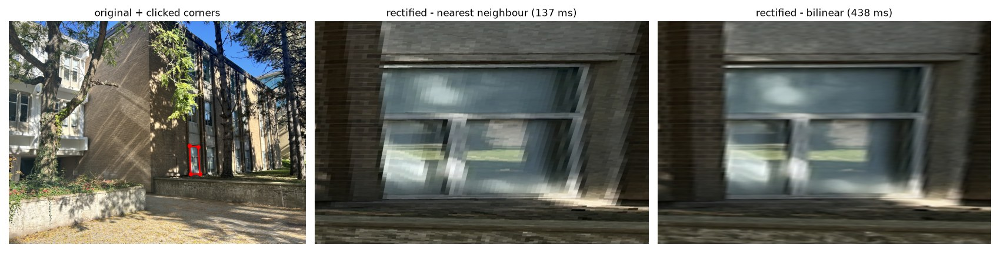
building_rect_1. Left: the original photo with the four clicked corners; middle: rectified with nearest-neighbour interpolation; right: rectified with bilinear interpolation (warp times in the panel titles).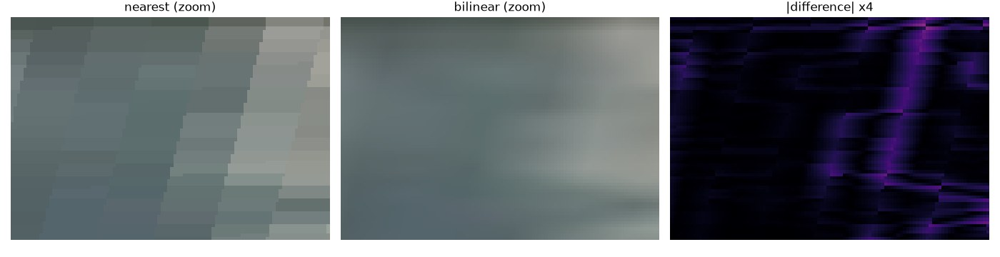
building_rect_1, zoom on the centre of the rectified image: nearest neighbour (blocky), bilinear (smooth) and the absolute difference between them (×4).
rectification 'building_rect_1' (Photoshoot/IMG_7647.jpeg, working size [1400, 1050])
clicked corners TL,TR,BR,BL (x,y):
[[851.4 588.7]
[891.6 592.7]
[900.4 720.0]
[856.7 721.8]]
target rectangle 750 x 500:
[[ 0.0 0.0]
[750.0 0.0]
[750.0 500.0]
[ 0.0 500.0]]
linear system A h = b:
A =
[[ 851.4 588.7 1.0 0.0 0.0 0.0 -0.0 -0.0]
[ 0.0 0.0 0.0 851.4 588.7 1.0 -0.0 -0.0]
[ 891.6 592.7 1.0 0.0 0.0 0.0 -668700.0 -444525.0]
[ 0.0 0.0 0.0 891.6 592.7 1.0 -0.0 -0.0]
[ 900.4 720.0 1.0 0.0 0.0 0.0 -675300.0 -540000.0]
[ 0.0 0.0 0.0 900.4 720.0 1.0 -450200.0 -360000.0]
[ 856.7 721.8 1.0 0.0 0.0 0.0 -0.0 -0.0]
[ 0.0 0.0 0.0 856.7 721.8 1.0 -428350.0 -360900.0]]
b = [ 0.0 0.0 750.0 0.0 750.0 500.0 0.0 500.0]
H =
[[ 11.911655 -0.474318 -9862.352000]
[ -0.273575 2.749433 -1385.669273]
[ -0.000752 0.000517 1.000000]]
max reprojection error on the 4 corners = 3.07e-12 px
warp time: nearest 132 ms, bilinear 436 ms
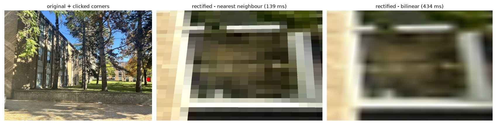
building_rect_2. Left: the original photo with the four clicked corners; middle: nearest neighbour; right: bilinear.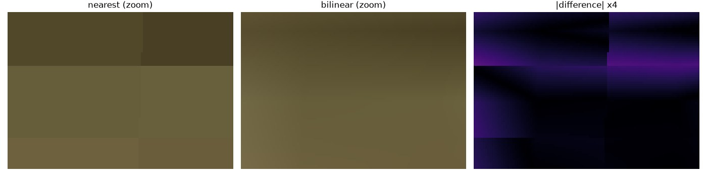
building_rect_2, zoom on the centre of the rectified image: nearest neighbour, bilinear and the absolute difference (×4).
rectification 'building_rect_2' (Photoshoot/IMG_7648.jpeg, working size [1400, 1050])
clicked corners TL,TR,BR,BL (x,y):
[[1356.7 648.4]
[1369.6 648.7]
[1369.3 664.4]
[1357.6 664.4]]
target rectangle 750 x 500:
[[ 0.0 0.0]
[750.0 0.0]
[750.0 500.0]
[ 0.0 500.0]]
linear system A h = b:
A =
[[ 1356.7 648.4 1.0 0.0 0.0 0.0 -0.0 -0.0]
[ 0.0 0.0 0.0 1356.7 648.4 1.0 -0.0 -0.0]
[ 1369.6 648.7 1.0 0.0 0.0 0.0 -1027200.0 -486525.0]
[ 0.0 0.0 0.0 1369.6 648.7 1.0 -0.0 -0.0]
[ 1369.3 664.4 1.0 0.0 0.0 0.0 -1026975.0 -498300.0]
[ 0.0 0.0 0.0 1369.3 664.4 1.0 -684650.0 -332200.0]
[ 1357.6 664.4 1.0 0.0 0.0 0.0 -0.0 -0.0]
[ 0.0 0.0 0.0 1357.6 664.4 1.0 -678800.0 -332200.0]]
b = [ 0.0 0.0 750.0 0.0 750.0 500.0 0.0 500.0]
H =
[[ 8.750596 -0.492221 -11552.778001]
[ -0.101058 4.345499 -2680.516011]
[ -0.000202 -0.000883 1.000000]]
max reprojection error on the 4 corners = 1.10e-11 px
warp time: nearest 139 ms, bilinear 425 ms
Bilinear took about 3.1-3.3x as long as nearest neighbour (4 reads and ~10 multiply-adds per channel instead of 1 read). In exchange it removes blocky staircase edges and pixel-doubling when the warp enlarges the image (zoom panels), at the cost of slight blur. When the warp shrinks the image both can alias, since neither averages over a footprint.
Okay, so now we have accounted for what's happening at each pixel in the final panorama, except that the overlapping parts now have two pixel values, one from each image. How do we decide which one to use? We can use a simple approach of taking the average of the two pixel values, but this can result in visible seams in the final panorama. A better approach is to use a weighted average, where we give more weight to the pixels that are closer to the centre of the image and less weight to the pixels that are closer to the edges. This results in a smoother transition between the two images and reduces visible seams. I also decided to try 2-band blending, since in the last assignment we used it for our hybrid images!
Below, I've shown two blending techniques. Feathering takes the weighted average at every pixel; the 2-band blend feathers only the low frequencies and takes high frequencies from one image per pixel, which removes ghosting.
The code for the homography chaining, the feathering weights and the blending is in Appendix A.
In general, feathering hides exposure differences between images well, but any misalignment (from click error or from the scene not being planar) is averaged into a ghost (look at the tree beside the building in the feathered image). The 2-band blend keeps each edge from a single image, so ghosting disappears; however, a leftover misalignment can then appear as a visible seam instead of a blur.
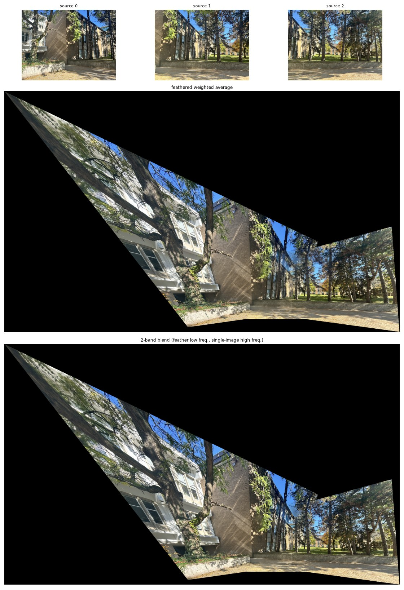
I stitched the Waterloo Park photos by hand as well. All four of them do not fit on one flat plane, so that mosaic is split into two overlapping pieces; those results are in Appendix B, and the lake is the main example for Part Two, where I compare the manual and the automatic result on both image sets.
Part two of this assignment is to add some functionalities to the image stitching we've done so far from part one to make it automatic from
start to finish. The Harris corner detector, feature descriptors, feature matching, and RANSAC all help the script "see" the features and match them.
The pipeline follows Multi-Image Matching using Multi-Scale Oriented Patches by Brown, Szeliski and Winder, with the simplifications from the
assignment (a single scale, no rotation invariance, no wavelet transform). All of the geometry (computeH, the warps and the blending) is
reused from Part 1 unchanged, so the only thing that changes is where the point correspondences come from. I walk through the pipeline on the Waterloo Park
photos (the "lake" set below) and build the mosaic from its first three images. The same pipeline was also run on the UW campus building; those figures, all the code
and the parameters are in the appendix.
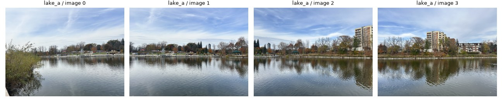
Computers can't "see" and interpret features as humans do: we can see a patch of blue and call it "sky", or a long blob of brown and a puffier blob of green and call it "tree". We might have already done something similar to a corner detector in Part 1 when we manually clicked on the features. I don't know about you, but I liked to choose "corners" of different objects between each of the image pairs earlier because they're easy to find in both images. In contrast, if I clicked in the middle of the sky in one image, chances are the same patch of sky in the other image would be a different shade of blue, and I wouldn't be able to find it. The Harris corner detector capitalizes on what makes a corner a corner.
Suppose we have a black square on a white background, but it's zoomed so we can only see the top right corner of the square. Then, we translated the square by 40 pixels. How can you tell the square has been moved? Well, the corner moved. If instead the zoom only allowed us to see the top of the square without the corners, we wouldn't know if the square had been moved if it moved horizontally unless a corner appears (this is known as the aperture problem). Point being now, that corners are distinctive features. A Harris corner is a point where the image changes strongly in two directions at once.
Concretely, at every pixel the detector looks at the image gradients (Ix, Iy, computed with a Gaussian derivative, σ = 1) inside a small Gaussian-weighted window (σ = 1.5) and builds the 2×2 matrix M = Σ w · [Ix², IxIy; IxIy, Iy²]. If both eigenvalues of M are small the patch is flat, if only one is large it is an edge, and if both are large it is a corner. Instead of the usual det(M) − k·trace(M)² score I used the harmonic-mean response from the paper, R = det(M) / trace(M) = λ1λ2 / (λ1 + λ2), which has no k to tune. The corners are the local maxima of R in a 7×7 neighbourhood that are above 1% of the strongest response and at least 20 px from the image border (so the 40×40 descriptor window later fits). At most the strongest 6000 are kept, a cap that the lake photos never reach. The code is in Appendix C.
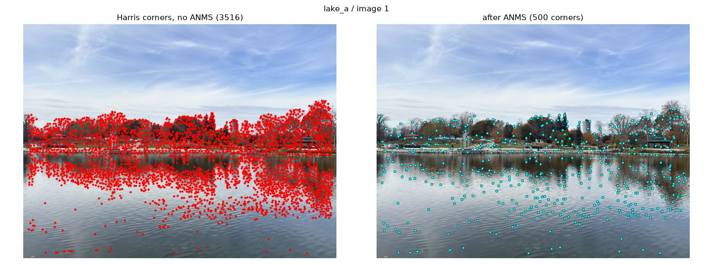
Great. Now we have all our Harris corners. Do you notice that the corners tend to be concentrated on certain features, such as the tree line and its reflection in the water? In the extreme cases, all feature matches are concentrated on one feature, which will mess up the homography calculations. We want to have a good distribution of features across the images, so how do we do this? Let's say we have a tree with many good quality corners, and a wall with a poorer quality corner, but it's the only corner within 40 pixels. Let's say we have a certain threshold on "quality" to determine which features to keep. By this metric, we preserve all the corners related to the tree, but we throw away the one related to the wall, but we can agree that the wall corner is a better feature to keep than the tree corners, because it is more distinctive. So, we can use ANMS (Adaptive Non-Maximal Suppression) to deal with this problem.
ANMS works by assigning each feature (aka Harris corner) a score based on how far away the nearest significantly stronger corner is. So back to our tree and wall example, the wall corner is the only corner within 40 pixels, so it will have a large score. The tree corners are all within 40 pixels of each other, so they will have smaller scores. "Significantly stronger" means f(xi) < 0.9 · f(xj) (the paper's crobust = 0.9), so a corner is only suppressed by one that is clearly stronger than it. We can then sort the corners by their scores and keep the top N corners (N = 500 here). This way, we ensure that we have a good distribution of features across the image, and we don't end up with too many features concentrated on one object. The right panel of the figure above shows the corners that survive. The ANMS code is also in Appendix C.
Nice! Now we've got some good features selected, we move onto matching them across images. We might be thinking, hmm, even if we know two features are the same, we might not be able to match them if they are in slightly different locations or even lighting conditions. The trick is to describe each corner with a big, blurry neighbourhood instead of a tiny sharp one: the low-frequency content of a patch barely changes if the corner is a pixel or two off or the viewpoint shifts a little, whereas fine detail would not survive that. So for each feature we take the 40x40 pixel window around it, blur the image (Gaussian, σ = 2) so that sampling does not alias, and take an 8x8 grid of samples spaced 5 pixels apart. We're choosing 40x40 because it provides a good balance between capturing enough context, suppressing noise, and maintaining computational efficiency. We then flatten the 8x8 patch into a 64-dimensional vector and bias/gain normalize it (subtract the mean, divide by the standard deviation), so it is invariant to brightness and contrast changes. Two descriptors can then be compared with their Euclidean distance (for vectors normalized this way, a small distance is the same as a high correlation). Yay for linear algebra!
These descriptors are axis-aligned and single-scale, so they are not invariant to rotation or scale (the assignment allows this). That works here because the camera was only turned side to side from the same spot, so the same feature looks nearly identical in neighbouring photos, but it would fail on tilted or zoomed shots. The code is in Appendix C.
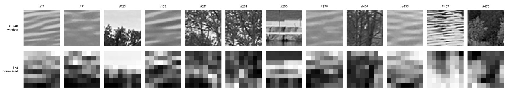
Dun dah dah! You guessed it, now we have our descriptors and we'll go match them across the different images we have. The first thing we do is use a distance function such as Euclidean distance (L2) or SSD to compare each descriptor in one image to every descriptor in the other image. Now we can see how computationally expensive it would have been if we did not downsample. It's okay if you can't see the problem with this (since I certainly didn't), but the problem is that a single descriptor on one image might have multiple similar distance descriptors from the second image. Lowe's Ratio Test is used to deal with this problem. It works by taking the two closest matches for each descriptor and comparing their distances. If Lowe's ratio is low, this means that the first descriptor distance is significantly smaller than the second closest descriptor distance, making it a much better match than the second. If it's high, it indicates that the two descriptors are similar, leading to an ambiguous match. We can threshold this value to filter out the ambiguous matches.
In the code (Appendix C), the two nearest neighbours of every descriptor in image i are found in image i+1 with a k-d tree (scipy.spatial.cKDTree) rather than a brute-force loop,
and a match is kept when the ratio is below 0.7. The test only runs in one direction (image i to image i+1); I did not add a left-right consistency check because RANSAC removes the remaining wrong matches in the next step.
The figures below show the matches between images 1 and 2.
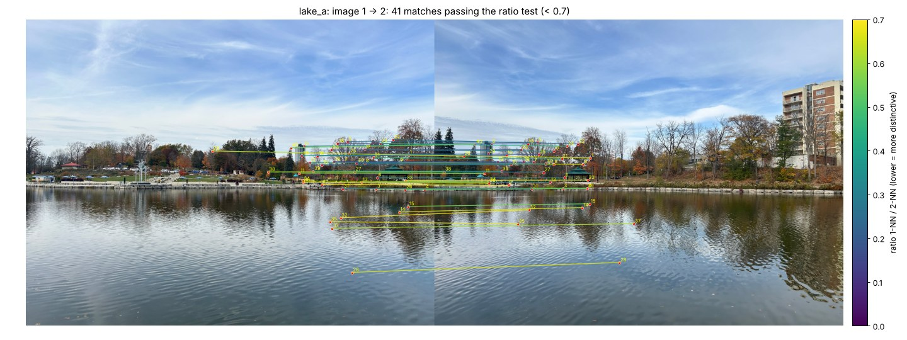
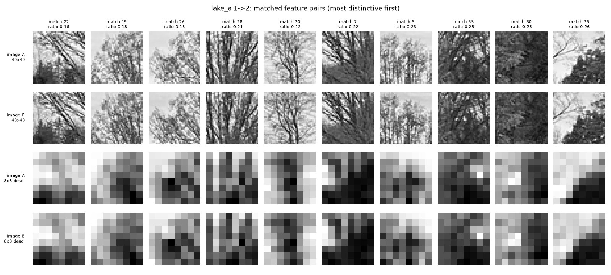
Before we pick a threshold, let's look at how the ratio is distributed for correct and incorrect matches. There is no ground truth for these photos, so I call a match "correct" if it later turns out to be a RANSAC inlier (candidates are collected with a loose ratio of 0.9 first). This is the joy of having a computer and running the script multiple times! The two groups separate nicely: correct matches have ratios mostly between 0.15 and 0.6, while incorrect matches pile up near 1, which is what we expect from ambiguous matches (ripples on the water all look alike). For this pair every match below a ratio of about 0.55 is correct, the precision is still 96% at 0.6, falls to 80% at 0.7, and collapses to 62% at 0.8 and 33% at 0.9, while the number of correct matches keeps growing only slowly. I settled on 0.7, which keeps about 70% of the correct matches and removes over 90% of the incorrect ones. A stricter threshold would be cleaner but leaves fewer than 25 matches, and RANSAC can deal with the few wrong ones that remain.
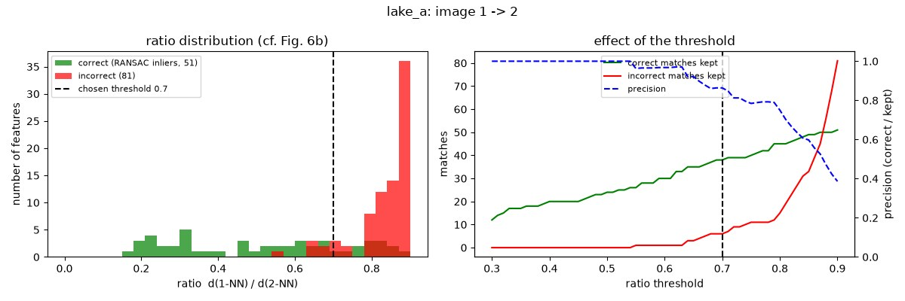
We've come very far in trying to automatically match features across the images, and we're really close to achieving our goal. Homographies
are unfortunately very sensitive to outliers (least squares gives a wrong match as much say as a right one), and you can see in the figure above that there are still some matches that are not correct. Is there another
way we can screen out the bad matches? A huge benefit of this whole automation process is that we have a large number of matches to work with, compared
to the clicking before, where it would take a long time to click on even a few features. Because of that we can use RANSAC
(Random Sample Consensus). RANSAC works by randomly sampling the minimum number of matches we need, four, and computing the exact homography from just those. If all four happen to be correct matches the homography will be good,
and if even one is an outlier it will be garbage. Either way, we can tell which one happened by counting how many of all the matches agree with that homography, i.e. have a reprojection error below ε = 3 pixels; these are the inliers.
We repeat this 5000 times, keep the homography with the most inliers, and then re-fit it by least squares (computeH from Part 1) on all of its inliers, which averages out the noise.
The figure below takes the matches from the previous step and sorts them into inliers and outliers. The implementation is in Appendix C.
How many iterations do we really need? If a fraction p of the matches are correct, a random sample of 4 is entirely correct with probability p4. Here 34 of 41 matches are correct, so p ≈ 0.83, that probability is about 0.47, and about 8 iterations would already give a 99% chance of drawing at least one clean sample (for the foliage-heavy building pairs, p ≈ 0.6 and it is about 35). So 5000 iterations is far more than enough, and still fast.
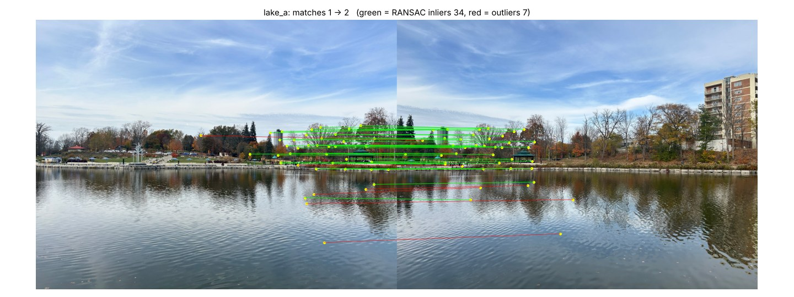
| pair | ratio-test matches | RANSAC inliers | inlier fraction | mean inlier error (px) |
|---|---|---|---|---|
| Waterloo Park 0 → 1 | 54 | 54 | 100% | 0.63 |
| Waterloo Park 1 → 2 | 41 | 34 | 83% | 0.88 |
| Waterloo Park 2 → 3 | 60 | 55 | 92% | 0.78 |
The recovered homographies for the two pairs that go into the mosaic (image i → image i+1, p2 ~ H p1) are below; the one for pair 2 → 3 is saved as a text file in the appendix.
H = [[ 2.18140 -0.13119 -1203.59611] [ 0.54951 1.77833 -518.58441] [ 0.00085 -0.00004 1.00000]]
H = [[ 3.12629 -0.11757 -2459.64000] [ 0.85148 2.51457 -870.72101] [ 0.00158 -0.00019 1.00000]]
Now we feed these homographies back into the warping and blending code from Part 1. The middle image (image 1) is the reference, exactly as in Part 1, and the result is below. As in Part 1, all four lake photos do not fit on one flat plane, so the mosaic uses images 0–2; the second piece (images 2–3) and a single cylindrical panorama of the whole lake since it's pretty.
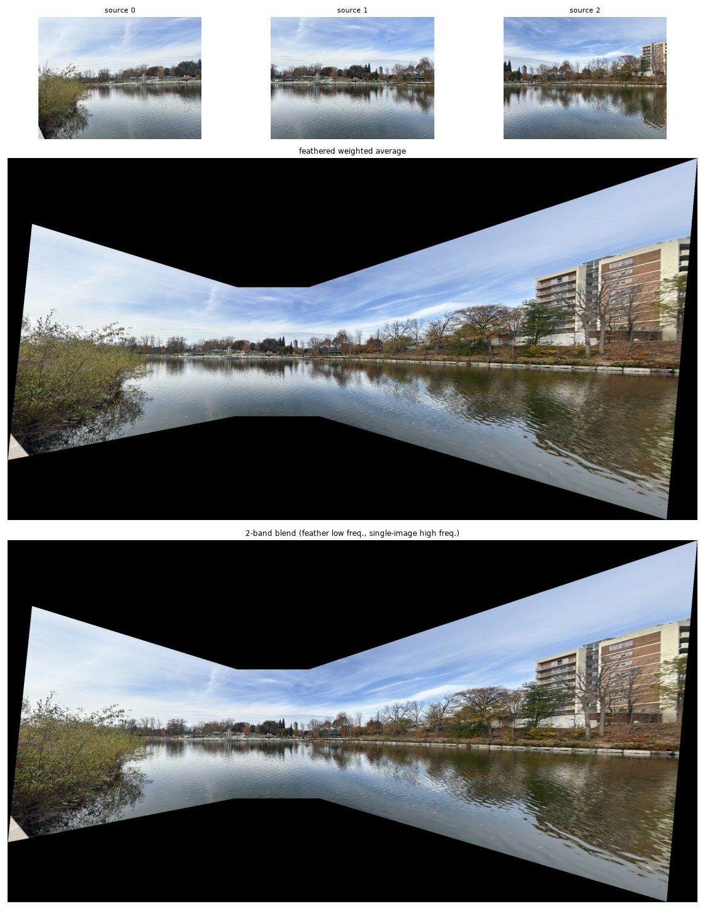
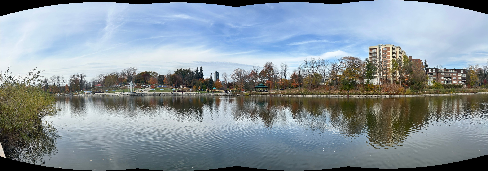
Finally, let's compare Part One and Part Two on both image sets. In every row below, the left image is stitched with the homographies from my clicks and the right image with the automatic ones. Both use the same warping code and the same 2-band blend, so the only difference is where the correspondences came from.
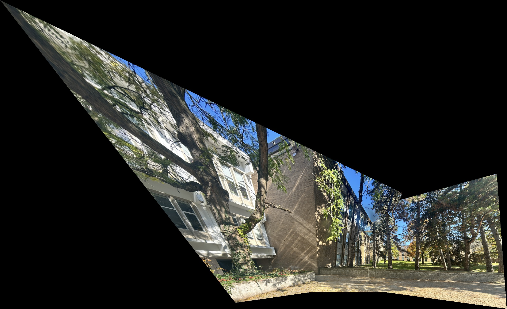
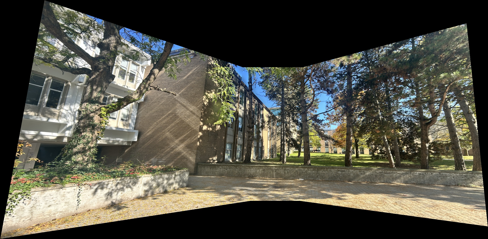
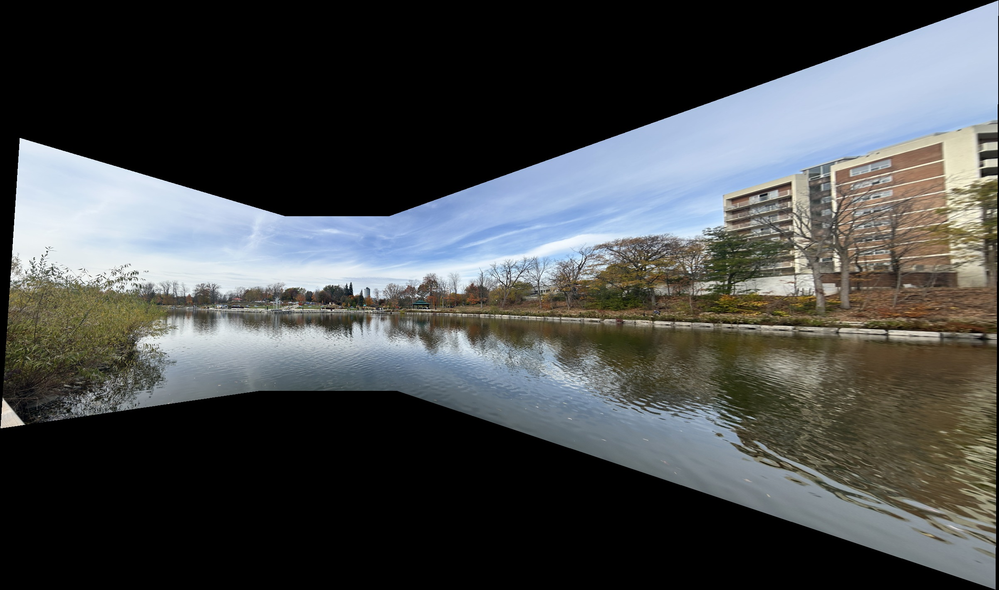
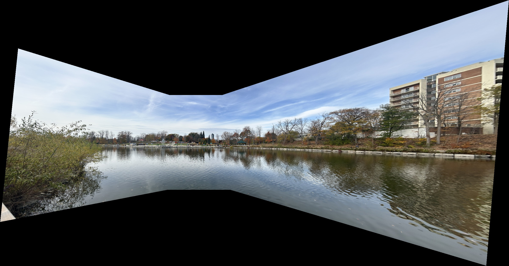
The building shows the biggest difference. My 8 clicks for pair 0 → 1 all sit on a couple of windows and cover only about 10% × 12% of each image, whereas the automatic inliers cover about 45% × 57%. The manual homography fits its own clicks well (1.8 px) but is badly constrained everywhere else, so the left image is stretched and sheared into a long triangle. The automatic homography is constrained by matches spread over the whole overlap, and the result looks like a real panorama with no visible seams. The cross-check table below shows the same thing in numbers: the automatic homography explains my clicks to within a few pixels, but the manual one misses the automatic inliers of the building pair 0 → 1 by about 29 px.
| pair | my clicks (n) | manual H on clicks | auto H on clicks | auto inliers (n) | auto H on inliers | manual H on inliers |
|---|---|---|---|---|---|---|
| Building 0 → 1 | 8 | 1.82 | 3.53 | 40 | 1.31 | 28.62 |
| Building 1 → 2 | 8 | 0.53 | 1.57 | 64 | 1.21 | 2.27 |
| Waterloo Park 0 → 1 | 5 | 0.13 | 0.62 | 54 | 0.63 | 5.65 |
| Waterloo Park 1 → 2 | 12 | 1.41 | 2.45 | 34 | 0.88 | 1.36 |
The lake mosaics look much more alike. The photos are dominated by distant scenery, so even clicks along a thin strip (pair 0 → 1 covers only 9% × 4% of the image) get the rotation roughly right, although the manual homography is still 5.7 px off on the automatic inliers there. In both versions the shoreline and the buildings line up with no visible seam at this scale; the main difference is a slightly different tilt and framing, since the two sets of homographies are not identical. Where the clicks were better spread (pair 1 → 2) each homography explains the other's points to within about 1.4–2.5 px. The real advantage of the automatic method is therefore not a better result when I click carefully, but that it is much less likely to go wrong when I don't, it scales to hundreds of points per pair, and it took no clicking at all.
Everything that is not needed to follow the main story lives here: the code, the parameters, the second image set for each part, and the remaining figures. The homographies and the systems of equations that the assignment asks for are in the main text.
def build_system(p1, p2):
"""
n point pairs -> the linear system A h = b for the 8 unknowns of H = [[a b c],[d e f],[g h 1]].
x' = (a x + b y + c) / (g x + h y + 1), y' = (d x + e y + f) / (g x + h y + 1)
Multiply by the denominator and move the unknowns left; the equations become LINEAR:
a x + b y + c - g x x' - h y x' = x'
d x + e y + f - g x y' - h y y' = y'
Each correspondence gives 2 rows, so we need n >= 4 points (H has 8 degrees of freedom).
"""
p1, p2 = np.asarray(p1, float), np.asarray(p2, float)
n = len(p1)
A, b = np.zeros((2 * n, 8)), np.zeros(2 * n)
x, y, xp, yp = p1[:, 0], p1[:, 1], p2[:, 0], p2[:, 1]
A[0::2, 0], A[0::2, 1], A[0::2, 2], A[0::2, 6], A[0::2, 7] = x, y, 1, -x * xp, -y * xp
A[1::2, 3], A[1::2, 4], A[1::2, 5], A[1::2, 6], A[1::2, 7] = x, y, 1, -x * yp, -y * yp
b[0::2], b[1::2] = xp, yp
return A, b
def computeH(im1_pts, im2_pts):
"""
H = computeH(im1_pts, im2_pts): n-by-2 arrays of (x, y), returns 3x3 H with p2 ~ H p1.
With exactly 4 points the system is square and solved exactly, but any click error
goes straight into H. With more points the system is OVERDETERMINED, so we solve it
in the least-squares sense (minimise ||A h - b||^2), which averages out the noise.
"""
p1, p2 = np.asarray(im1_pts, float), np.asarray(im2_pts, float)
assert p1.shape == p2.shape and len(p1) >= 4, "need >= 4 matching points"
q1, T1 = _normalize(p1)
q2, T2 = _normalize(p2)
A, b = build_system(q1, q2)
h, *_ = np.linalg.lstsq(A, b, rcond=None)
Hn = np.append(h, 1.0).reshape(3, 3)
H = np.linalg.inv(T2) @ Hn @ T1 # undo the normalisation
return H / H[2, 2]
def rectify(job, quad, outdir):
"""Homography that sends 4 clicked corners of a real-world rectangle to a true rectangle; everything
on that plane then looks as if the camera pointed straight at it. quad order: TL, TR, BR, BL."""
im = load_image(job["image"])
aspect, rect_h, margin = job.get("aspect", 1.0), job.get("rect_h", 500), job.get("margin", 0.35)
rect_w = rect_h * aspect
dst = np.array([[0, 0], [rect_w, 0], [rect_w, rect_h], [0, rect_h]], float)
H = computeH(quad, dst)
mx, my = margin * rect_w, margin * rect_h
bbox = (int(-mx), int(-my), int(rect_w + mx), int(rect_h + my))
nn, m_nn, _ = warpImageNearestNeighbor(im, H, bbox)
bl, m_bl, _ = warpImageBilinear(im, H, bbox)
... # timing, saving the images and the comparison figures are omitted here
def output_bbox(shape, H):
h, w = shape[:2]
corners = np.array([[0, 0], [w - 1, 0], [w - 1, h - 1], [0, h - 1]], float)
c = apply_H(H, corners)
return (int(np.floor(c[:, 0].min())), int(np.floor(c[:, 1].min())),
int(np.ceil(c[:, 0].max())), int(np.ceil(c[:, 1].max())))
def _inverse_map(shape, H, bbox):
xmin, ymin, xmax, ymax = bbox
xs, ys = np.meshgrid(np.arange(xmin, xmax + 1), np.arange(ymin, ymax + 1))
P = np.stack([xs.ravel(), ys.ravel(), np.ones(xs.size)]) # 3 x N
Hinv = np.linalg.inv(H)
S = Hinv @ P
d = S[2]
# Guard against the "behind the camera" mirror: for big rotations the denominator
# can change sign, and those pixels would wrongly map back into the image.
h, w = shape[:2]
cw = (H @ np.array([w / 2, h / 2, 1.0]))[2] # w' at the image centre
ok_sign = (d * cw) > 1e-9 * np.abs(cw)
d_safe = np.where(ok_sign, d, 1.0)
sx, sy = S[0] / d_safe, S[1] / d_safe
out_shape = (ymax - ymin + 1, xmax - xmin + 1)
return sx, sy, ok_sign, out_shape
def warpImageNearestNeighbor(im, H, bbox=None):
"""Round to the closest source pixel. Returns (warped, mask, (xmin, ymin)); mask = 1 where real data."""
bbox = bbox or output_bbox(im.shape, H)
sx, sy, ok, (oh, ow) = _inverse_map(im.shape, H, bbox)
h, w = im.shape[:2]
xi, yi = np.rint(sx).astype(np.int64), np.rint(sy).astype(np.int64)
valid = ok & (xi >= 0) & (xi < w) & (yi >= 0) & (yi < h)
out = np.zeros((oh * ow,) + im.shape[2:], im.dtype)
out[valid] = im[yi[valid], xi[valid]]
return out.reshape((oh, ow) + im.shape[2:]), valid.reshape(oh, ow).astype(np.float32), bbox[:2]
def warpImageBilinear(im, H, bbox=None):
"""Weighted average of the 4 surrounding pixels:
I(x,y) = (1-dx)(1-dy) I00 + dx(1-dy) I10 + (1-dx)dy I01 + dx dy I11."""
bbox = bbox or output_bbox(im.shape, H)
sx, sy, ok, (oh, ow) = _inverse_map(im.shape, H, bbox)
h, w = im.shape[:2]
valid = ok & (sx >= 0) & (sx <= w - 1) & (sy >= 0) & (sy <= h - 1)
x, y = np.clip(sx[valid], 0, w - 1), np.clip(sy[valid], 0, h - 1)
x0, y0 = np.minimum(np.floor(x).astype(np.int64), w - 2), np.minimum(np.floor(y).astype(np.int64), h - 2)
dx, dy = x - x0, y - y0
if im.ndim == 3:
dx, dy = dx[:, None], dy[:, None]
vals = ((1 - dx) * (1 - dy) * im[y0, x0] + dx * (1 - dy) * im[y0, x0 + 1] +
(1 - dx) * dy * im[y0 + 1, x0] + dx * dy * im[y0 + 1, x0 + 1])
out = np.zeros((oh * ow,) + im.shape[2:], im.dtype)
out[valid] = vals
return out.reshape((oh, ow) + im.shape[2:]), valid.reshape(oh, ow).astype(np.float32), bbox[:2]
def homographies_to_reference(Hpair, idxs, ref):
"""Chain neighbouring homographies so every image maps into the reference image's frame
(matrix products going one way, inverses the other). The middle image keeps stretching small."""
out = {ref: np.eye(3)}
for i in range(ref - 1, idxs[0] - 1, -1):
out[i] = out[i + 1] @ Hpair[i]
for i in range(ref + 1, idxs[-1] + 1):
out[i] = out[i - 1] @ np.linalg.inv(Hpair[i - 1])
return {k: v / v[2, 2] for k, v in out.items()}
def feather_weight(shape):
"""Distance to the nearest image border, normalised: 0 at the edge, 1 at the centre."""
h, w = shape[:2]
d = distance_transform_edt(np.pad(np.ones((h, w)), 1))[1:-1, 1:-1]
return (d / d.max()).astype(np.float32)
def build_mosaic(imgs, idxs, Hs, max_dim=None, sigma=None):
"""Warp the images into one canvas and blend two ways in one pass:
feather (weighted average by distance-to-border), and
twoband (low frequencies feathered with a blurred weight; high frequencies from the single image
with the largest weight, so edges cannot ghost)."""
max_dim = max_dim or CANVAS_MAX
boxes = np.array([output_bbox(imgs[i].shape, Hs[i]) for i in idxs])
span = max(boxes[:, 2].max() - boxes[:, 0].min(), boxes[:, 3].max() - boxes[:, 1].min())
s = min(1.0, max_dim / span)
Hs = {i: np.diag([s, s, 1.0]) @ Hs[i] for i in idxs}
boxes = np.array([output_bbox(imgs[i].shape, Hs[i]) for i in idxs])
bbox = (boxes[:, 0].min(), boxes[:, 1].min(), boxes[:, 2].max(), boxes[:, 3].max())
oh, ow = bbox[3] - bbox[1] + 1, bbox[2] - bbox[0] + 1
sigma, eps = sigma or max(3.0, ow / 300.0), 1e-8
f_num, f_den = np.zeros((oh, ow, 3), np.float32), np.zeros((oh, ow), np.float32)
l_num, l_den = np.zeros((oh, ow, 3), np.float32), np.zeros((oh, ow), np.float32)
hi_sel, best, cover = np.zeros((oh, ow, 3), np.float32), np.zeros((oh, ow), np.float32), np.zeros((oh, ow), np.float32)
for i in idxs:
warped, mask, _ = warpImageBilinear(np.dstack([imgs[i], feather_weight(imgs[i].shape)]), Hs[i], bbox)
rgb, w = warped[..., :3], warped[..., 3] * mask
f_num += w[..., None] * rgb; f_den += w
low = gaussian_filter(rgb * mask[..., None], (sigma, sigma, 0)) / (gaussian_filter(mask, sigma)[..., None] + eps)
wb = gaussian_filter(w, sigma)
l_num += wb[..., None] * low; l_den += wb
sel = w > best
hi_sel[sel] = (rgb - low)[sel]; best[sel] = w[sel]
cover = np.maximum(cover, mask)
feather = np.where(f_den[..., None] > 1e-6, f_num / np.maximum(f_den[..., None], eps), 0)
twoband = np.where(l_den[..., None] > 1e-6, l_num / np.maximum(l_den[..., None], eps) + hi_sel, 0)
out = {"feather": feather, "twoband": twoband}
return {k: np.where(cover[..., None] > 0, np.clip(v, 0, 1), 0).astype(np.float32) for k, v in out.items()}
The Waterloo Park photos, stitched by hand. These are the clicked correspondences, the systems of equations and the recovered homographies for every pair, followed by the two manual mosaic pieces.
==== pair 0 -> 1 (5 correspondences, 10 equations, 8 unknowns) ====
im1_pts (x, y):
[[695.9 509.2]
[667.8 520.7]
[721.7 517.3]
[791.4 545.3]
[746.3 548.3]]
im2_pts (x, y):
[[157.6 489.3]
[119.9 499.0]
[190.0 500.2]
[272.3 535.8]
[217.7 535.8]]
linear system A h = b, h = [a b c d e f g h]^T (raw pixel coordinates):
A =
[[ 695.9 509.2 1.0 0.0 0.0 0.0 -109673.8 -80249.9]
[ 0.0 0.0 0.0 695.9 509.2 1.0 -340503.9 -249151.6]
[ 667.8 520.7 1.0 0.0 0.0 0.0 -80069.2 -62431.9]
[ 0.0 0.0 0.0 667.8 520.7 1.0 -333232.2 -259829.3]
[ 721.7 517.3 1.0 0.0 0.0 0.0 -137123.0 -98287.0]
[ 0.0 0.0 0.0 721.7 517.3 1.0 -360994.3 -258753.5]
[ 791.4 545.3 1.0 0.0 0.0 0.0 -215498.2 -148485.2]
[ 0.0 0.0 0.0 791.4 545.3 1.0 -424032.1 -292171.7]
[ 746.3 548.3 1.0 0.0 0.0 0.0 -162469.5 -119364.9]
[ 0.0 0.0 0.0 746.3 548.3 1.0 -399867.5 -293779.1]]
b = [157.6 489.3 119.9 499.0 190.0 500.2 272.3 535.8 217.7 535.8]
recovered H (p2 ~ H p1):
[[ 2.102519 -0.136338 -1151.461619]
[ 0.520142 1.693478 -473.000364]
[ 0.000755 0.000020 1.000000]]
reprojection error: mean 0.13 px, max 0.23 px
==== pair 1 -> 2 (12 correspondences, 24 equations, 8 unknowns) ====
im1_pts (x, y):
[[ 936.1 427.9]
[ 919.9 441.9]
[ 957.0 435.8]
[ 839.2 394.2]
[ 845.6 397.0]
[ 925.1 528.3]
[1085.6 577.4]
[ 847.3 540.3]
[ 815.0 403.8]
[1258.5 499.0]
[1203.9 525.7]
[1320.9 340.4]]
im2_pts (x, y):
[[174.3 417.9]
[153.4 431.8]
[198.4 429.0]
[ 46.9 370.4]
[ 55.5 372.4]
[157.7 528.7]
[331.0 578.1]
[ 54.4 544.9]
[ 14.9 375.2]
[490.9 504.0]
[443.5 528.3]
[539.0 367.8]]
linear system A h = b, h = [a b c d e f g h]^T (raw pixel coordinates):
A =
[[ 936.1 427.9 1.0 0.0 0.0 0.0 -163162.2 -74583.0]
[ 0.0 0.0 0.0 936.1 427.9 1.0 -391196.2 -178819.4]
[ 919.9 441.9 1.0 0.0 0.0 0.0 -141112.7 -67787.5]
[ 0.0 0.0 0.0 919.9 441.9 1.0 -397212.8 -190812.4]
[ 957.0 435.8 1.0 0.0 0.0 0.0 -189868.8 -86462.7]
[ 0.0 0.0 0.0 957.0 435.8 1.0 -410553.0 -186958.2]
[ 839.2 394.2 1.0 0.0 0.0 0.0 -39358.5 -18488.0]
[ 0.0 0.0 0.0 839.2 394.2 1.0 -310839.7 -146011.7]
[ 845.6 397.0 1.0 0.0 0.0 0.0 -46930.8 -22033.5]
[ 0.0 0.0 0.0 845.6 397.0 1.0 -314901.4 -147842.8]
[ 925.1 528.3 1.0 0.0 0.0 0.0 -145888.3 -83312.9]
[ 0.0 0.0 0.0 925.1 528.3 1.0 -489100.4 -279312.2]
[ 1085.6 577.4 1.0 0.0 0.0 0.0 -359333.6 -191119.4]
[ 0.0 0.0 0.0 1085.6 577.4 1.0 -627585.4 -333794.9]
[ 847.3 540.3 1.0 0.0 0.0 0.0 -46093.1 -29392.3]
[ 0.0 0.0 0.0 847.3 540.3 1.0 -461693.8 -294409.5]
[ 815.0 403.8 1.0 0.0 0.0 0.0 -12143.5 -6016.6]
[ 0.0 0.0 0.0 815.0 403.8 1.0 -305788.0 -151505.8]
[ 1258.5 499.0 1.0 0.0 0.0 0.0 -617797.7 -244959.1]
[ 0.0 0.0 0.0 1258.5 499.0 1.0 -634284.0 -251496.0]
[ 1203.9 525.7 1.0 0.0 0.0 0.0 -533929.7 -233148.0]
[ 0.0 0.0 0.0 1203.9 525.7 1.0 -636020.4 -277727.3]
[ 1320.9 340.4 1.0 0.0 0.0 0.0 -711965.1 -183475.6]
[ 0.0 0.0 0.0 1320.9 340.4 1.0 -485827.0 -125199.1]]
b = [174.3 417.9 153.4 431.8 198.4 429.0 46.9 370.4 55.5 372.4 157.7 528.7 331.0 578.1 54.4 544.9 14.9 375.2 490.9 504.0 443.5 528.3 539.0 367.8]
recovered H (p2 ~ H p1):
[[ 4.042699 -0.106314 -3215.373531]
[ 1.173237 3.310438 -1253.548452]
[ 0.002193 -0.000079 1.000000]]
reprojection error: mean 1.41 px, max 2.72 px
==== pair 2 -> 3 (5 correspondences, 10 equations, 8 unknowns) ====
im1_pts (x, y):
[[1191.7 249.1]
[1260.9 232.5]
[1277.5 464.4]
[ 961.0 330.7]
[1054.3 590.5]]
im2_pts (x, y):
[[574.2 288.3]
[628.7 282.4]
[640.5 485.3]
[356.5 336.7]
[447.0 600.4]]
linear system A h = b, h = [a b c d e f g h]^T (raw pixel coordinates):
A =
[[ 1191.7 249.1 1.0 0.0 0.0 0.0 -684274.1 -143033.2]
[ 0.0 0.0 0.0 1191.7 249.1 1.0 -343567.1 -71815.5]
[ 1260.9 232.5 1.0 0.0 0.0 0.0 -792727.8 -146172.8]
[ 0.0 0.0 0.0 1260.9 232.5 1.0 -356078.2 -65658.0]
[ 1277.5 464.4 1.0 0.0 0.0 0.0 -818238.8 -297448.2]
[ 0.0 0.0 0.0 1277.5 464.4 1.0 -619970.8 -225373.3]
[ 961.0 330.7 1.0 0.0 0.0 0.0 -342596.5 -117894.6]
[ 0.0 0.0 0.0 961.0 330.7 1.0 -323568.7 -111346.7]
[ 1054.3 590.5 1.0 0.0 0.0 0.0 -471272.1 -263953.5]
[ 0.0 0.0 0.0 1054.3 590.5 1.0 -633001.7 -354536.2]]
b = [574.2 288.3 628.7 282.4 640.5 485.3 356.5 336.7 447.0 600.4]
recovered H (p2 ~ H p1):
[[ 2.684887 -0.062616 -1800.190931]
[ 0.662776 2.139638 -627.693803]
[ 0.001200 -0.000073 1.000000]]
reprojection error: mean 0.28 px, max 0.54 px
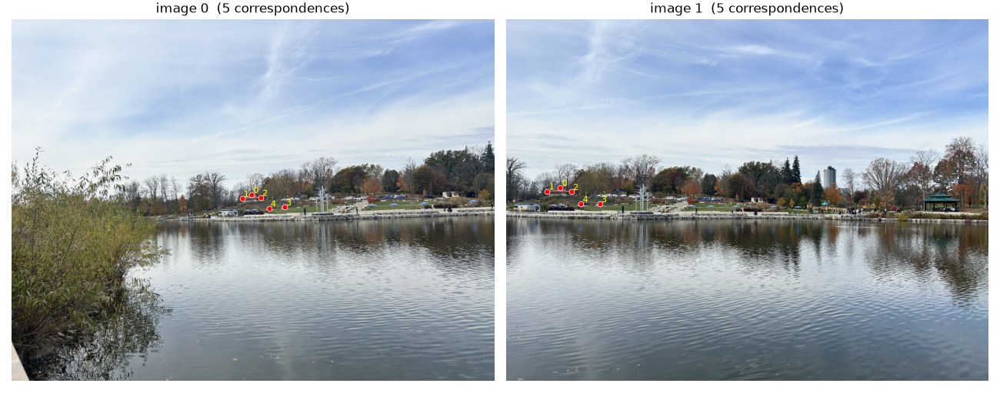
H = [[ 2.10252 -0.13634 -1151.46162] [ 0.52014 1.69348 -473.00036] [ 0.00076 0.00002 1.00000]]
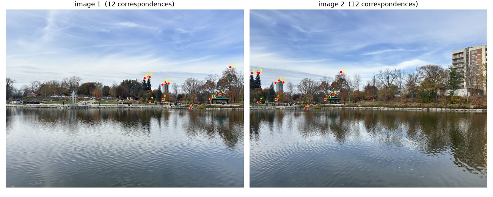
H = [[ 4.04270 -0.10631 -3215.37353] [ 1.17324 3.31044 -1253.54845] [ 0.00219 -0.00008 1.00000]]
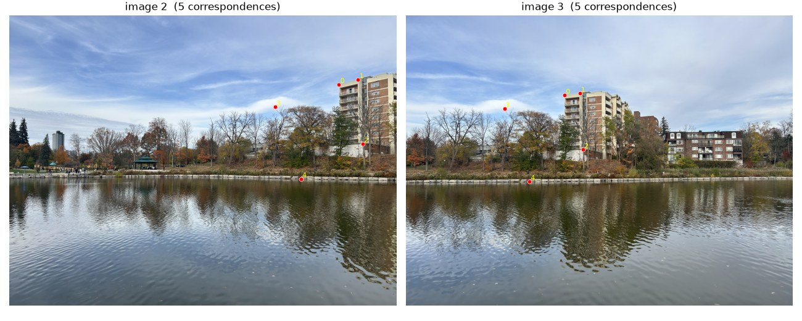
H = [[ 2.68489 -0.06262 -1800.19093] [ 0.66278 2.13964 -627.69380] [ 0.00120 -0.00007 1.00000]]
Since all four images cannot fit in one flat mosaic, they are split into two overlapping pieces. Before building each mosaic, the code checks every warped image: all of it must stay in front of the virtual camera, and its area cannot grow or shrink by more than a factor of 6. With a single plane as the projection surface, images far from the reference are stretched enormously (and eventually land "behind" the camera), so this check fails when all four images are combined. The code then greedily takes the longest run of consecutive images that passes, builds a mosaic from it, and starts the next piece at that run's last image, so neighbouring pieces overlap by one image. A cylindrical or spherical projection would be needed to get a single seamless panorama.
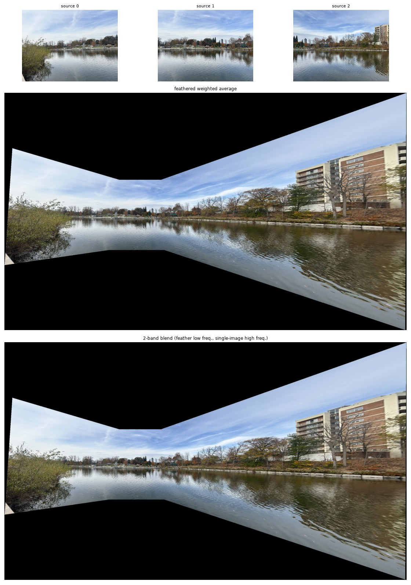
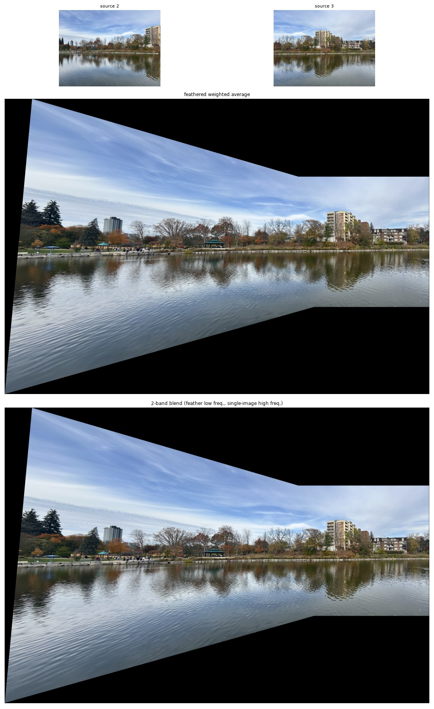
def harris(gray, sigma_d=1.0, sigma_i=1.5, margin=20, rel_thresh=0.01, max_pts=6000, nms_size=7):
"""Single-scale Harris detector. Response is the harmonic mean det(M)/tr(M) used in Brown et al.
Returns (pts as [x, y], strengths) of local maxima, sorted strongest first, `margin` px away from the border
(the 40x40 descriptor window must fit)."""
Ix = gaussian_filter(gray, sigma_d, order=(0, 1))
Iy = gaussian_filter(gray, sigma_d, order=(1, 0))
Sxx, Syy, Sxy = (gaussian_filter(a, sigma_i) for a in (Ix * Ix, Iy * Iy, Ix * Iy))
R = (Sxx * Syy - Sxy ** 2) / (Sxx + Syy + 1e-12)
peaks = (R == maximum_filter(R, size=nms_size)) & (R > rel_thresh * R.max())
h, w = gray.shape
peaks[:margin], peaks[-margin:], peaks[:, :margin], peaks[:, -margin:] = False, False, False, False
ys, xs = np.nonzero(peaks)
f = R[ys, xs]
order = np.argsort(-f)[:max_pts]
return np.c_[xs[order], ys[order]].astype(np.float64), f[order]
def anms(pts, strength, n_keep=500, c_robust=0.9, chunk=400):
"""Adaptive Non-Maximal Suppression (Brown et al. sec. 3). Each corner i gets a suppression radius
r_i = min_j |x_i - x_j| over corners j with f(x_i) < c_robust * f(x_j)
(the distance to the nearest clearly-stronger corner). Keeping the n corners with the LARGEST radii gives a
set that is strong AND spatially spread out. pts/strength must be sorted strongest first."""
n = len(pts)
radius = np.full(n, np.inf)
for s in range(0, n, chunk):
e = min(n, s + chunk)
d2 = ((pts[s:e, None, :] - pts[None, :, :]) ** 2).sum(-1)
stronger = strength[s:e, None] < c_robust * strength[None, :]
d2 = np.where(stronger, d2, np.inf)
radius[s:e] = d2.min(axis=1)
keep = np.argsort(-radius, kind="stable")[:n_keep] # strongest corner has radius inf -> always kept
return pts[keep], radius[keep]
def extract_descriptors(gray, pts, win=40, size=8, blur_sigma=2.0):
"""Axis-aligned descriptors: blur the image, then sample an 8x8 grid with spacing 5 px from the 40x40 window
around each corner (so each descriptor value is a smoothed average over a big neighbourhood).
Bias/gain normalise (zero mean, unit std) for robustness to brightness/contrast changes.
Returns (descs [n, 64], pts that were kept)."""
blurred = gaussian_filter(gray, blur_sigma)
step = win // size # 5
offs = (np.arange(size) - size // 2) * step + step // 2 + 0 # -17,-12,...,18 (centred on the corner)
h, w = gray.shape
xi, yi = np.rint(pts[:, 0]).astype(int), np.rint(pts[:, 1]).astype(int)
ok = (xi + offs.min() >= 0) & (xi + offs.max() < w) & (yi + offs.min() >= 0) & (yi + offs.max() < h)
xi, yi, pts = xi[ok], yi[ok], pts[ok]
patches = blurred[yi[:, None, None] + offs[None, :, None], xi[:, None, None] + offs[None, None, :]] # n x 8 x 8
flat = patches.reshape(len(pts), -1)
flat = (flat - flat.mean(1, keepdims=True)) / (flat.std(1, keepdims=True) + 1e-8)
return flat, pts
def nn_ratios(d1, d2):
"""For every descriptor in image 1: index of its nearest neighbour in image 2 and the ratio
d(1st NN) / d(2nd NN) (small ratio = the best match is much better than the runner-up = distinctive)."""
dists, idx = cKDTree(d2).query(d1, k=2)
return idx[:, 0], dists[:, 0] / (dists[:, 1] + 1e-12)
def match_features(d1, d2, ratio=0.7):
"""Lowe ratio test: accept i -> its nearest neighbour j in image 2 if d(1st NN) / d(2nd NN) < ratio.
Returns index arrays (i, j) and the ratios."""
j, r = nn_ratios(d1, d2)
good = r < ratio
return np.nonzero(good)[0], j[good], r[good]
def ransac_homography(p1, p2, n_iter=5000, eps=3.0, seed=0, min_inliers=8):
"""4-point RANSAC. Repeat: pick 4 random matches, solve H exactly (computeH from part 1), count matches whose
reprojection error |H p1 - p2| is below eps pixels (the inliers). Keep the hypothesis with the most inliers
(ties: lower total error), then re-fit H by least squares on all its inliers (twice, re-selecting inliers).
Returns H, boolean inlier mask."""
n = len(p1)
if n < 4:
raise ValueError(f"RANSAC needs >= 4 matches, got {n}")
rng = np.random.default_rng(seed)
best_inl, best_cost = None, np.inf
best_n = 0
with np.errstate(all="ignore"):
for _ in range(n_iter):
s = rng.choice(n, 4, replace=False)
try:
H = P.computeH(p1[s], p2[s])
except Exception:
continue
if not np.all(np.isfinite(H)):
continue
err = P.reprojection_errors(H, p1, p2)
inl = err < eps
k = int(inl.sum())
cost = float(err[inl].sum())
if k > best_n or (k == best_n and cost < best_cost):
best_n, best_cost, best_inl = k, cost, inl
if best_inl is None or best_n < max(4, min_inliers):
raise RuntimeError(f"RANSAC found only {best_n} inliers out of {n} matches (need >= {min_inliers}); "
"try a larger --ratio, more --anms corners, or a larger --eps")
inl = best_inl
for _ in range(2): # least-squares refit on the inliers
H = P.computeH(p1[inl], p2[inl])
inl = P.reprojection_errors(H, p1, p2) < eps
H = P.computeH(p1[inl], p2[inl])
return H, P.reprojection_errors(H, p1, p2) < eps
def to_cyl(pts, f, cx, cy):
"""image pixel (x, y) -> cylinder coordinates (arc length, height), both in pixels."""
x, y = pts[:, 0] - cx, pts[:, 1] - cy
return np.c_[f * np.arctan2(x, f), f * y / np.hypot(x, f)]
def fit_shift(a, b, trim=3.0):
"""Shift s with a ~ b + s (robust: median, then mean of the points within `trim` px). Returns s and residuals."""
d = a - b
s = np.median(d, axis=0)
for _ in range(3):
r = np.linalg.norm(d - s, axis=1)
keep = r < trim
if keep.sum() < 4:
keep = np.ones(len(r), bool)
s = d[keep].mean(axis=0)
return s, np.linalg.norm(d - s, axis=1)
def focal_score(f, matches, cx, cy):
"""How badly a pure shift explains the matches for this focal length (median residual, summed over pairs)."""
return sum(np.median(fit_shift(to_cyl(a, f, cx, cy), to_cyl(b, f, cx, cy))[1]) for a, b in matches)
def search_focal(matches, w, cx, cy):
fs = np.geomspace(0.4 * w, 2.0 * w, 120)
sc = np.array([focal_score(f, matches, cx, cy) for f in fs])
f0 = fs[sc.argmin()]
fine = np.linspace(f0 * 0.96, f0 * 1.04, 81) # refine around the coarse minimum
sc2 = np.array([focal_score(f, matches, cx, cy) for f in fine])
return fine[sc2.argmin()], fs, sc
| stage | parameter | value |
|---|---|---|
| B.1 Harris | derivative / window Gaussian σ | 1.0 / 1.5 |
| local-maximum neighbourhood | 7 × 7 | |
| response threshold | 1% of the strongest response | |
| border margin / max corners | 20 px / strongest 6000 | |
| B.1 ANMS | crobust / corners kept | 0.9 / 500 |
| B.2 Descriptor | window / pre-blur σ / samples | 40 × 40 / 2.0 / 8 × 8 (5 px apart) |
| normalization | zero mean, unit standard deviation | |
| B.3 Matching | Lowe ratio threshold (1-NN / 2-NN) | 0.7 |
| B.4 RANSAC | sample size / iterations / inlier threshold | 4 / 5000 / 3 px |
The figures for the lake that are not in the main text (the main text uses image 1 and the pair 1 → 2), the second mosaic piece, and the cylindrical panorama.
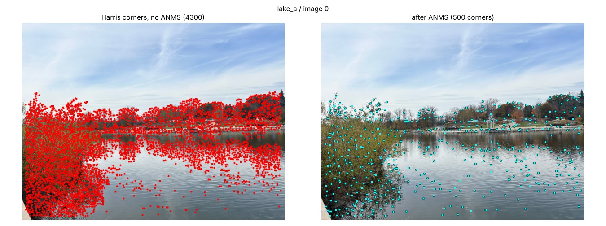
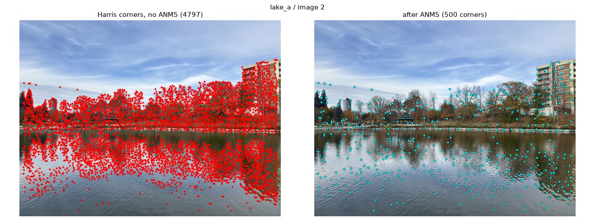
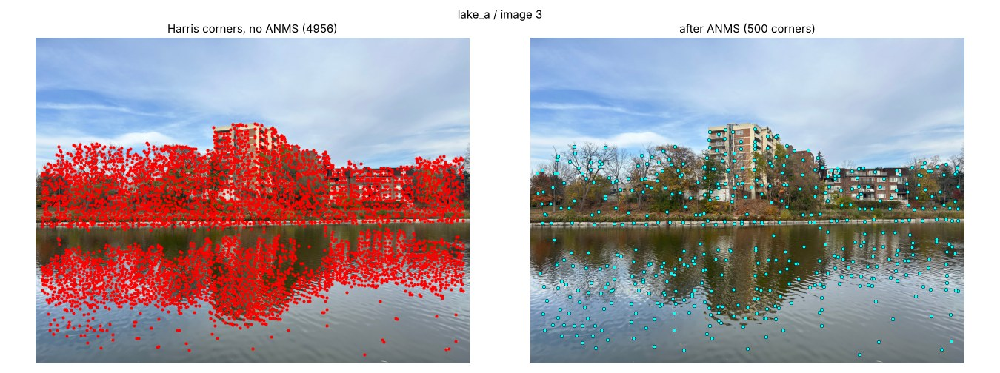
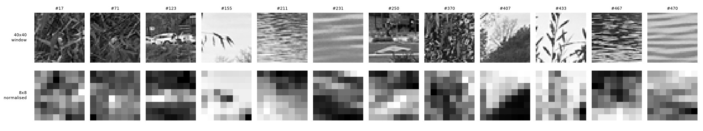
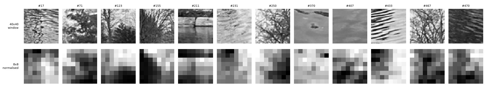
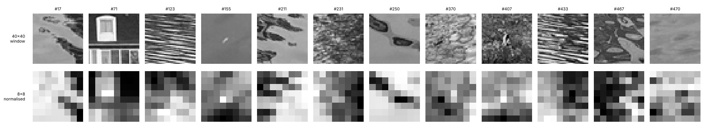
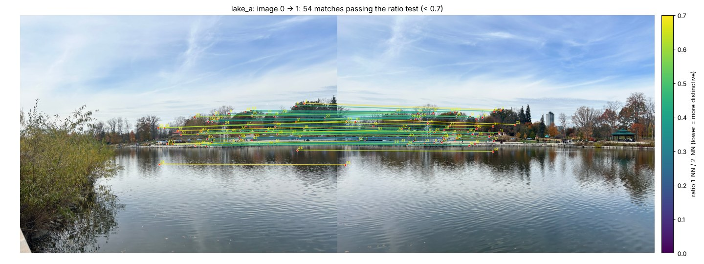
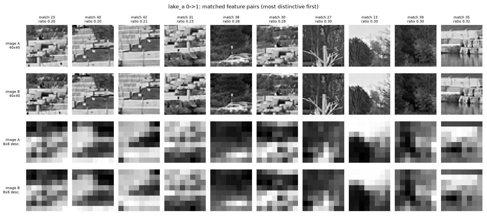
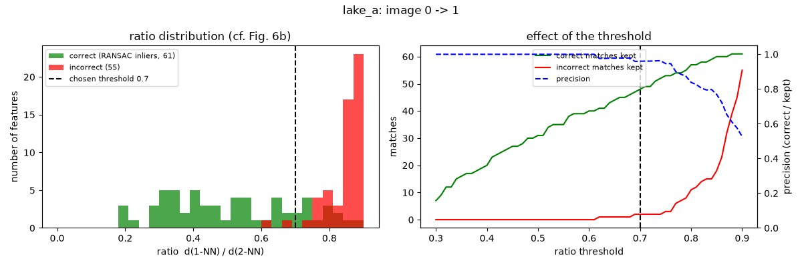
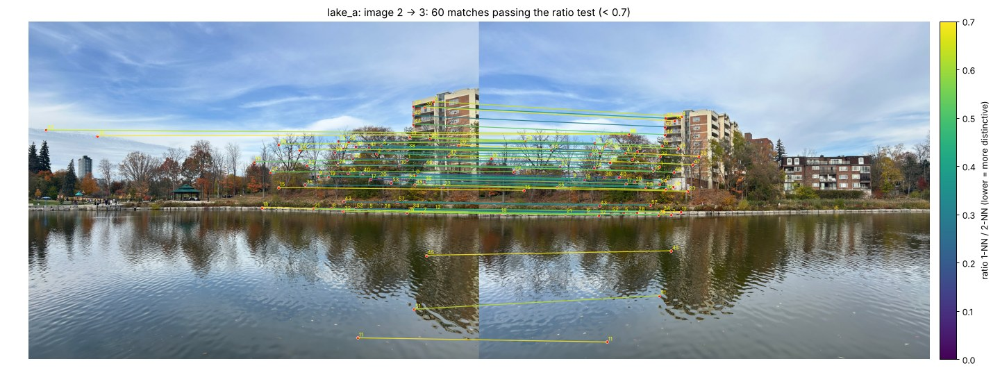
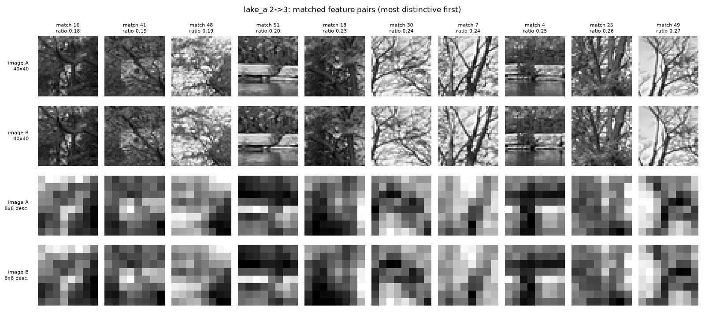
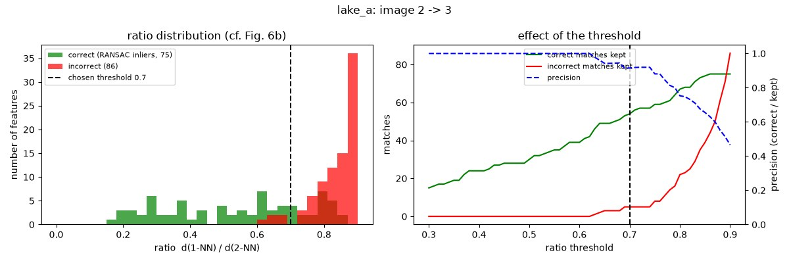
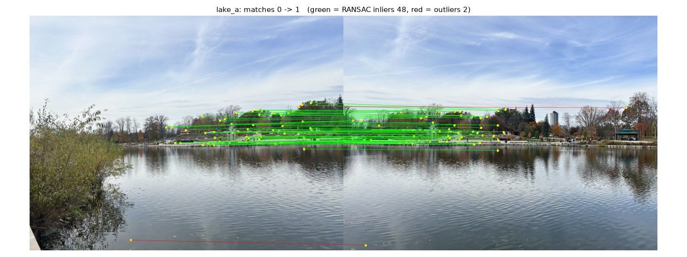
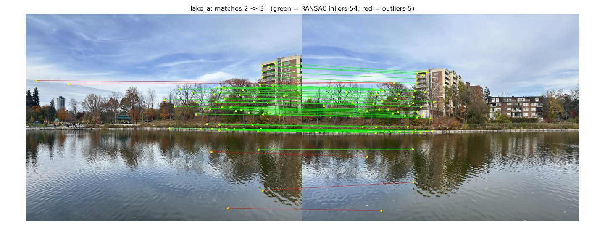
Homographies found by RANSAC (image i → image i+1, p2 ~ H p1):
# homography mapping image 0 -> image 1 (RANSAC, p2 ~ H p1) 2.181397 -0.131186 -1203.596107 0.549510 1.778331 -518.584412 0.000855 -0.000041 1.000000 # homography mapping image 2 -> image 3 (RANSAC, p2 ~ H p1) 2.612800 -0.057393 -1741.955633 0.636415 2.114020 -603.834269 0.001154 -0.000048 1.000000
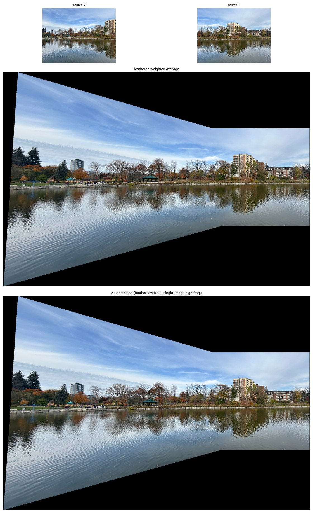
In Part 1, the four lake photos could not fit on a single flat plane, so we had to split them. If the camera only rotates, we can project every photo onto a cylinder instead, using x' = f · atan((x − cx) / f) and y' = f · (y − cy) / √((x − cx)² + f²), where f is the focal length in pixels. On the cylinder the motion between two neighbouring photos is just a translation, so no chained homographies are needed and nothing can land “behind the camera”. I reuse the RANSAC inliers from above, search for the focal length f for which a pure shift per pair explains the matches best (f ≈ 1048 px at 1400 px wide, about a 67° horizontal field of view), chain the shifts, and blend with the same feathering and 2-band code. All four photos now fit in one panorama (code in Appendix C). The first pair fits worst (about 8 px median residual), probably because of the nearby bush in the foreground (parallax), but it is not visible in the blend.
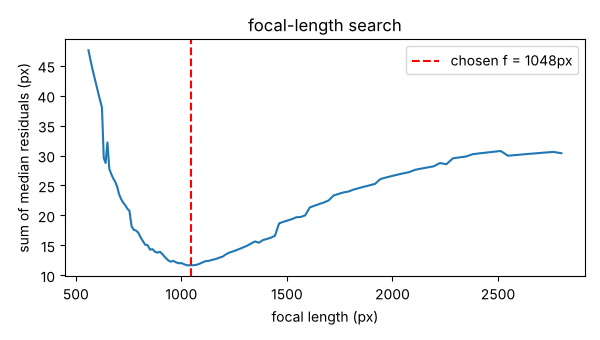
The same Part Two pipeline on the UW campus building photos. The building is harder than the lake: most corners are on foliage, so the matches are less clean (about 60% inliers instead of 80–100%).
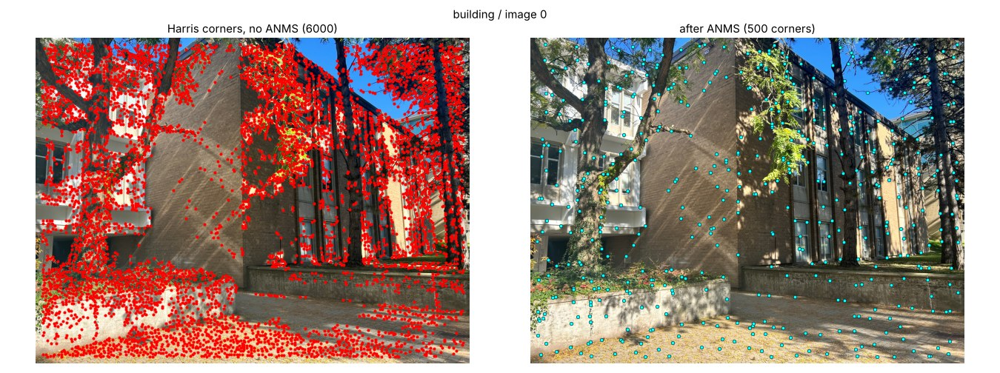
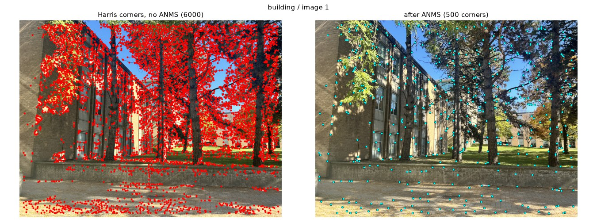
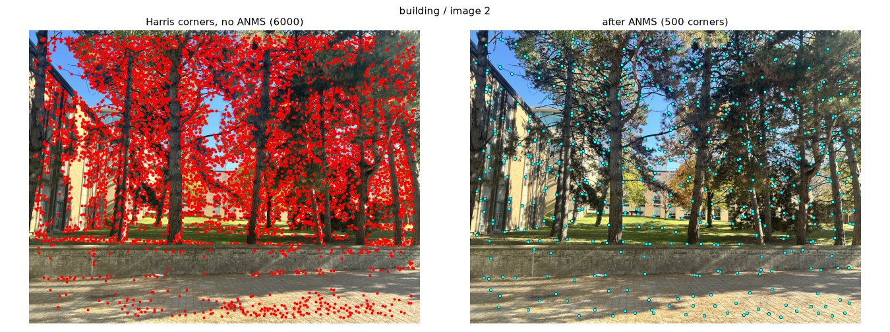
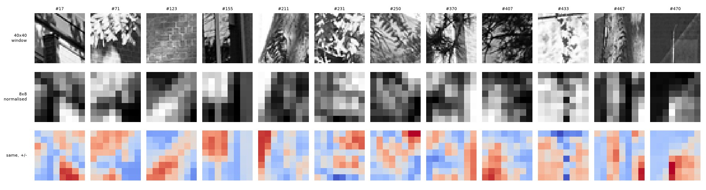
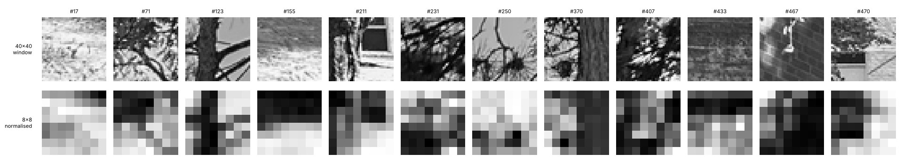
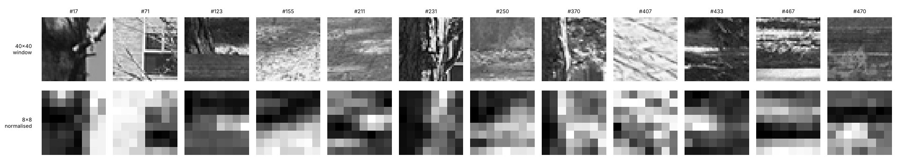
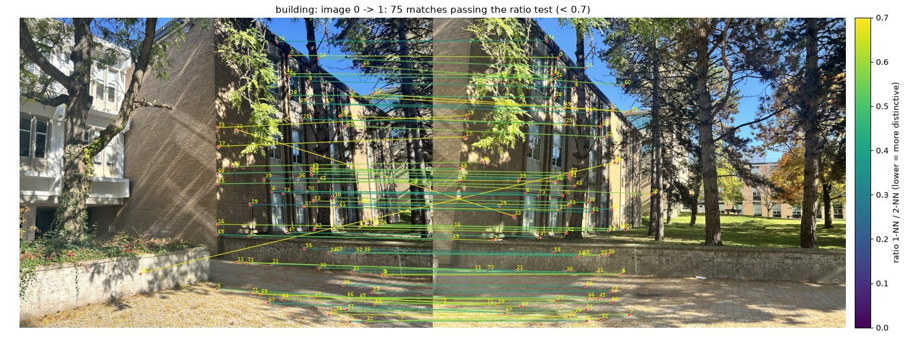
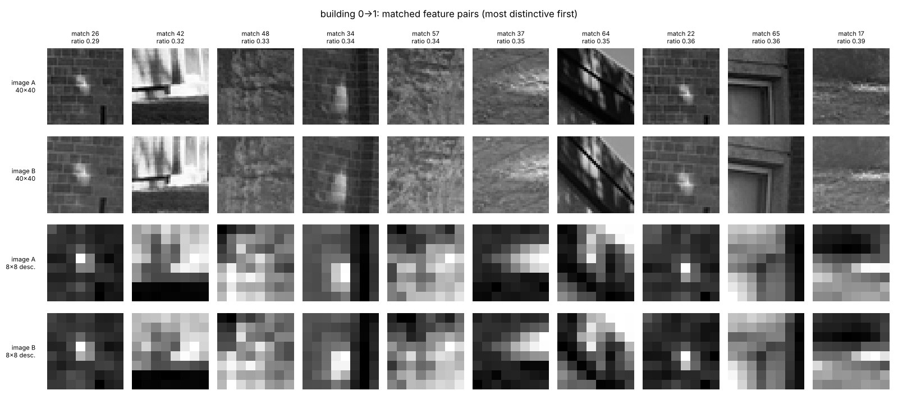
For this foliage-heavy pair the threshold is much less clear-cut than for the lake: the precision only moves between about 56% and 67% for thresholds from 0.4 to 0.8, and 0.7 keeps about 60% of the correct matches while removing about 70% of the incorrect ones. This is why RANSAC is still needed afterwards.
| pair | ratio-test matches | RANSAC inliers | inlier fraction | mean inlier error (px) |
|---|---|---|---|---|
| Building 0 → 1 | 66 | 40 | 61% | 1.31 |
| Building 1 → 2 | 113 | 64 | 57% | 1.21 |
Homographies found by RANSAC (image i → image i+1, p2 ~ H p1):
# homography mapping image 0 -> image 1 (RANSAC, p2 ~ H p1) 2.175353 -0.232489 -1188.297618 0.575996 1.845248 -566.816579 0.000800 0.000031 1.000000 # homography mapping image 1 -> image 2 (RANSAC, p2 ~ H p1) 1.840346 -0.111284 -846.192511 0.415743 1.532282 -378.118747 0.000600 -0.000009 1.000000